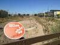
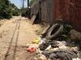
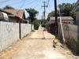

Environment
-
New South LA wetlands now drained and dry
10/24/12, 1:46 p.m.
The recently opened wetlands must be re-lined and refilled. Officials make tentative plans for phase two.
-
6 dishes you can grow in your own backyard
10/11/12, 1:47 p.m.
A new study suggests you ought to have seven helpings of fruits and vegetables every day. We're here to help.
-
Traffic pollution to blame for 8 percent of county's child asthma cases: study
9/25/12, 11:39 a.m.
Of L.A. County's more than 320,000 cases of childhood asthma, more than 27,000 can be attributed to traffic-caused pollution.
-
USC launches 'green tailgating' campaign for football season
9/4/12, 12:57 p.m.
An average of 13 tons of waste ais created during each football game. School officials are trying to cut down on trash and increase recycling.
-
How South Central is staying cool during LA's heat wave
8/15/12, 1 p.m.
With temperatures nearing 90 degrees Fahrenheit, the streets of South LA were mostly empty on a weekday afternoon. As the rest of LA tried to escape the heat, here's how the few who braved the stifling weather stayed cool.
-
Greening vacant lots: Good for the aesthetics and the crime rate?
8/8/12, 4:22 p.m.
Beautifying vacant lots makes people feel safer – and seems to reduce crime in the surrounding area, according to a new study.
-
Plan looks to cure South LA alleys of ugliness, lack of accessibility
7/5/12, 1:09 p.m.
Walking through an alley is rarely a pleasant experience, but the Trust for Public Land is trying to change that for one South L.A. neighborhood.
-
South LA's public health enemy: WHO declares diesel fumes to be cancerous
6/13/12, 12:11 p.m.
With its freeways and industrial pockets, the southside has plenty of diesel fumes to go around, which the World Health Organization just declared a "known" cancer risk.
-
Vermont Avenue's sacred ground (Hint: It's not a place of worship)
5/24/12, 7:26 a.m.
Makadu Labeet doesn't quite remember what year he came to the U.S. or even how old he is, exactly. But he was on drugs for 21 years, and says one South L.A. community garden is what kept him clean.
-
World Water Day: LA celebrates access to fresh water
3/22/12, 4:45 p.m.
For the international day of water appreciation, the Natural History Museum is holding a special edition of their "Sustainable Sundays."
About Us
OnCentral is a site for the neighborhoods around Central Avenue. It's a news site where we not only provide information, but put the power of storytelling in your hands. Sign up and you can share your story or help an existing story grow by adding in your perspective or corrections.
Follow OnCentral


- Most Viewed
- Most Commented